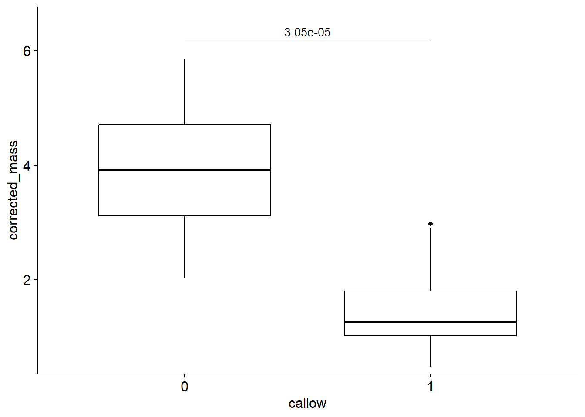
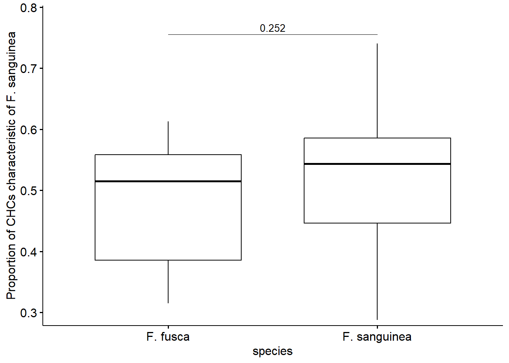
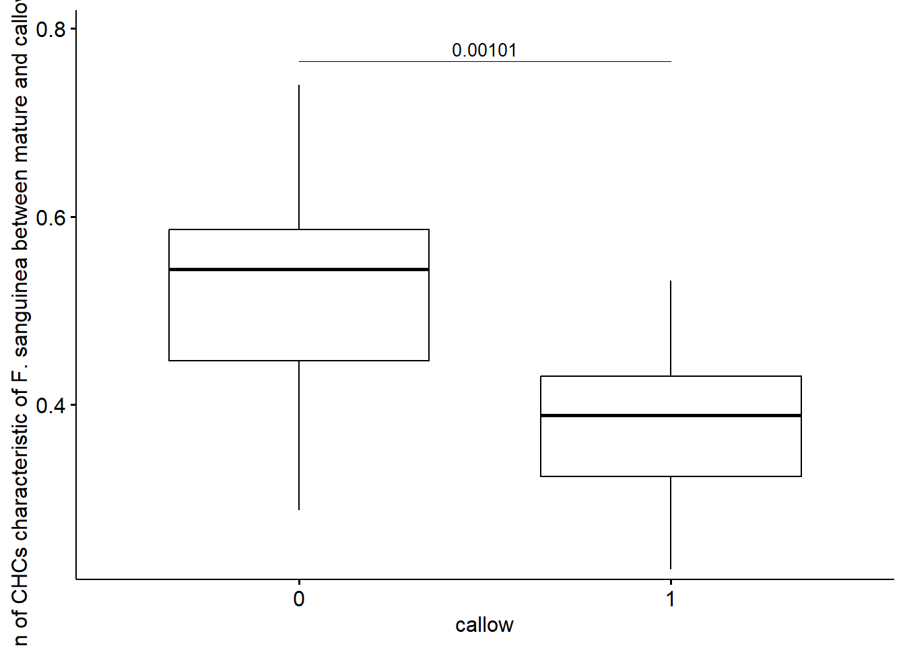
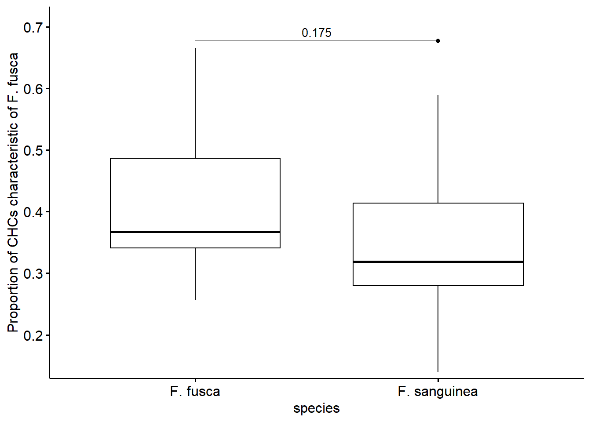
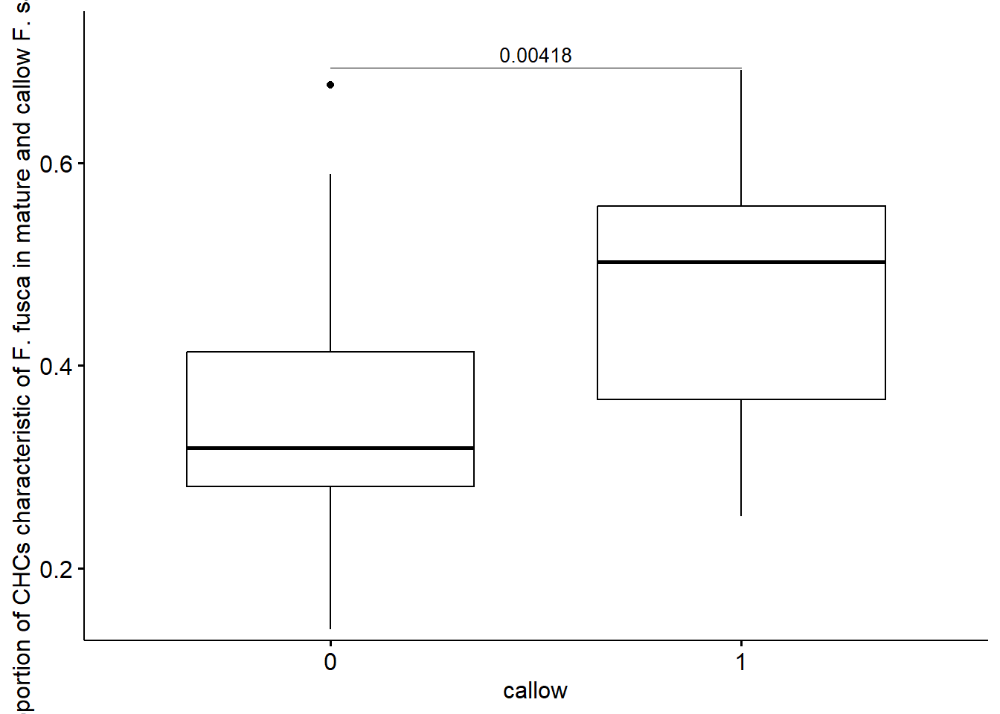
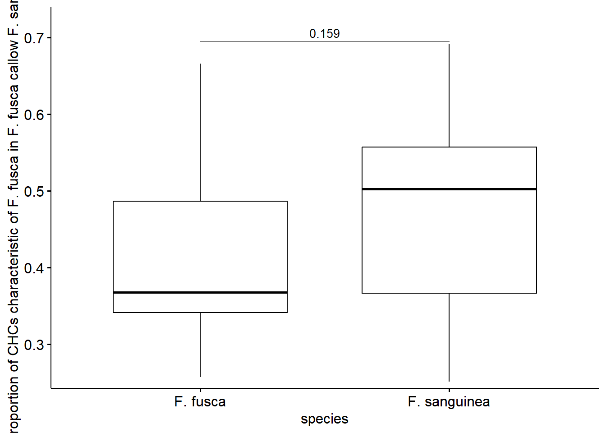
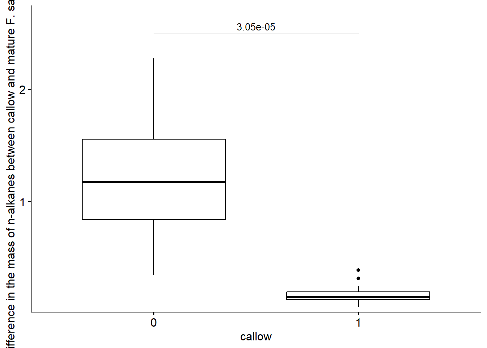
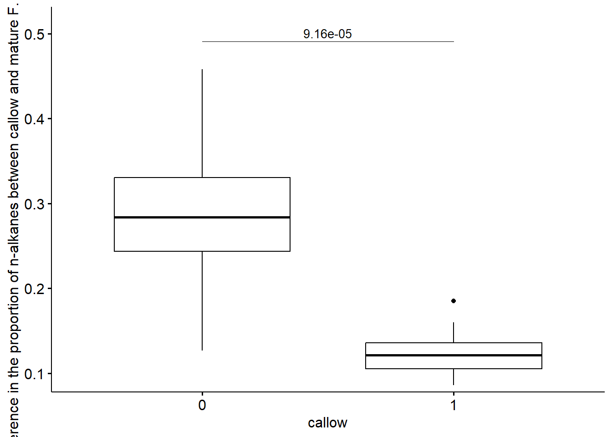

Chapter 5 Comparison of CHC amount and proportions in between different categories of individuals
suppressMessages({
library(sangchem)
library(dplyr)
library(ggpubr)
library(rstatix)
})
# load data
data("development_data")
data("mass_spectra_data")
development_samples <- filter(development_data, caste=="worker", !remarks %in% c("aggression actor", "aggression target", "queenless colony")) %>% select(species, census_date, colony, corrected_mass,callow, chromatogram_ID)
load_globals()5.1 Difference in the total CHC amount between callow and mature F. sanguinea
test_data <- filter(development_samples, species == "F. sanguinea")
test_data_mature <- filter(test_data, callow == 0) %>% colony_weighted_mean()
test_data_mature$callow <- 0
test_data_callow <- filter(test_data, callow == 1) %>% colony_weighted_mean()
test_data_callow $callow <- 1
colonies <- intersect(test_data_mature$colony, test_data_callow$colony)
test_df <- rbind(test_data_callow, test_data_mature)
test_df <- test_df[test_df$colony %in% colonies,]
test_df <- test_df[order(test_df$colony),]
wilcox_test(test_df, corrected_mass~callow, paired=TRUE)## # A tibble: 1 x 7
## .y. group1 group2 n1 n2 statistic p
## * <chr> <chr> <chr> <int> <int> <dbl> <dbl>
## 1 corrected_mass 0 1 16 16 136 0.0000305test_df$callow <- factor(test_df$callow)
test_stats <- wilcox_test(test_df, corrected_mass~callow, paired=TRUE) %>%
add_significance("p") %>%
add_xy_position(x="callow", dodge=0.8, fun="max")
ggboxplot(test_df, x="callow", y="corrected_mass")+
scale_y_continuous(expand = expansion(mult=c(0.02,0.1)))+
stat_pvalue_manual(test_stats, label="p", tip.length = 0, size=3.5)
5.2 Difference in the proportion of CHCs characteristic of F. sanguinea between mature F. sanguinea and F. fusca
test_data <- development_samples
test_data$sang_prop <- subsample_proportion(peaks_sang, test_data$chromatogram_ID)
test_data_sang <- filter(test_data, species == "F. sanguinea", callow == 0) %>% colony_weighted_mean(var = "sang_prop")
test_data_sang$species <- "F. sanguinea"
test_data_fusca <- filter(test_data, species == "F. fusca") %>% colony_weighted_mean(var = "sang_prop")
test_data_fusca$species <- "F. fusca"
colonies <- intersect(test_data_sang$colony, test_data_fusca$colony)
test_df <- rbind(test_data_fusca, test_data_sang)
test_df <- test_df[test_df$colony %in% colonies,]
test_df <- test_df[order(test_df$colony),]
test_df$species <- factor(test_df$species)
test_stats <- wilcox_test(test_df, sang_prop~species, paired=TRUE) %>%
add_significance("p") %>%
add_xy_position(x="species", dodge=0.8, fun="max")
ggboxplot(test_df, x="species", y="sang_prop")+
ylab("Proportion of CHCs characteristic of F. sanguinea")+
scale_y_continuous(expand = expansion(mult=c(0.02,0.1)))+
stat_pvalue_manual(test_stats, label="p", tip.length = 0, size=3.5)
5.3 Difference in the proportion of CHCs characteristic of F. sanguinea between mature and callow F. sanguinea
test_data <- filter(development_samples, species == "F. sanguinea")
test_data$sang_prop <- subsample_proportion(peaks_sang, test_data$chromatogram_ID)
test_data_mature <- filter(test_data, callow == 0) %>%
colony_weighted_mean(var = "sang_prop")
test_data_mature$callow <- 0
test_data_callow <- filter(test_data,callow == 1) %>% colony_weighted_mean(var = "sang_prop")
test_data_callow$callow <- 1
colonies <- intersect(test_data_mature$colony, test_data_callow$colony)
test_df <- rbind(test_data_mature, test_data_callow)
test_df <- test_df[test_df$colony %in% colonies,]
test_df <- test_df[order(test_df$colony),]
test_df$callow <- factor(test_df$callow)
test_stats <- wilcox_test(test_df, sang_prop~callow, paired=TRUE) %>%
add_significance("p") %>%
add_xy_position(x="callow", dodge=0.8, fun="max")
ggboxplot(test_df, x="callow", y="sang_prop")+
ylab("Proportion of CHCs characteristic of F. sanguinea between mature and callow F. sanguinea")+
scale_y_continuous(expand = expansion(mult=c(0.02,0.1)))+
stat_pvalue_manual(test_stats, label="p", tip.length = 0, size=3.5)
5.4 Difference in the proportion of CHCs characteristic of F. fusca between mature F. sanguinea and F. fusca
test_data <- development_samples
test_data$fusca_prop <- subsample_proportion(peaks_fusca, test_data$chromatogram_ID)
test_data_sang <- filter(test_data, species == "F. sanguinea", callow == 0) %>% colony_weighted_mean(var = "fusca_prop")
test_data_sang$species <- "F. sanguinea"
test_data_fusca <- filter(test_data, species == "F. fusca") %>% colony_weighted_mean(var = "fusca_prop")
test_data_fusca$species <- "F. fusca"
colonies <- intersect(test_data_sang$colony, test_data_fusca$colony)
test_df <- rbind(test_data_fusca, test_data_sang)
test_df <- test_df[test_df$colony %in% colonies,]
test_df <- test_df[order(test_df$colony),]
test_df$species <- factor(test_df$species)
test_stats <- wilcox_test(test_df, fusca_prop~species, paired=TRUE) %>%
add_significance("p") %>%
add_xy_position(x="species", dodge=0.8, fun="max")
ggboxplot(test_df, x="species", y="fusca_prop")+
ylab("Proportion of CHCs characteristic of F. fusca")+
scale_y_continuous(expand = expansion(mult=c(0.02,0.1)))+
stat_pvalue_manual(test_stats, label="p", tip.length = 0, size=3.5)
5.5 Difference in the proportion of CHCs characteristic of F. fusca between mature and callow F. sanguinea
test_data <- filter(development_samples, species == "F. sanguinea")
test_data$fusca_prop <- subsample_proportion(peaks_fusca, test_data$chromatogram_ID)
test_data_mature <- filter(test_data, callow == 0) %>%
colony_weighted_mean(var = "fusca_prop")
test_data_mature$callow <- 0
test_data_callow <- filter(test_data,callow == 1) %>% colony_weighted_mean(var = "fusca_prop")
test_data_callow$callow <- 1
colonies <- intersect(test_data_mature$colony, test_data_callow$colony)
test_df <- rbind(test_data_mature, test_data_callow)
test_df <- test_df[test_df$colony %in% colonies,]
test_df <- test_df[order(test_df$colony),]
test_df$callow <- factor(test_df$callow)
test_stats <- wilcox_test(test_df, fusca_prop~callow, paired=TRUE) %>%
add_significance("p") %>%
add_xy_position(x="callow", dodge=0.8, fun="max")
ggboxplot(test_df, x="callow", y="fusca_prop")+
ylab("Proportion of CHCs characteristic of F. fusca in mature and callow F. sanguinea")+
scale_y_continuous(expand = expansion(mult=c(0.02,0.1)))+
stat_pvalue_manual(test_stats, label="p", tip.length = 0, size=3.5)
5.6 Difference in the proportion of CHCs characteristic of F. fusca between callow F. sanguinea and F. fusca
test_data <- filter(development_samples)
test_data$fusca_prop <- subsample_proportion(peaks_fusca, test_data$chromatogram_ID)
test_data_sang <- filter(test_data, callow == 1, species =="F. sanguinea") %>%
colony_weighted_mean(var = "fusca_prop")
test_data_sang$species <- "F. sanguinea"
test_data_fusca <- filter(test_data,species == "F. fusca") %>% colony_weighted_mean(var = "fusca_prop")
test_data_fusca$species <- "F. fusca"
colonies <- intersect(test_data_fusca$colony, test_data_sang$colony)
test_df <- rbind(test_data_sang, test_data_fusca)
test_df <- test_df[test_df$colony %in% colonies,]
test_df <- test_df[order(test_df$colony),]
test_df$species <- factor(test_df$species)
test_stats <- wilcox_test(test_df, fusca_prop~species, paired=TRUE) %>%
add_significance("p") %>%
add_xy_position(x="species", dodge=0.8, fun="max")
ggboxplot(test_df, x="species", y="fusca_prop")+
ylab("Proportion of CHCs characteristic of F. fusca in F. fusca callow F. sanguinea")+
scale_y_continuous(expand = expansion(mult=c(0.02,0.1)))+
stat_pvalue_manual(test_stats, label="p", tip.length = 0, size=3.5)
5.7 Difference in the mass of n-alkanes between callow and mature F. sanguinea
n_alkanes_ID <- unique(mass_spectra_data$peak_ID[grep("^C[0-9]{2}$",mass_spectra_data$identification)])
test_data <- filter(development_samples, species == "F. sanguinea")
test_data$n_alkanes_prop <- subsample_proportion(n_alkanes_ID, test_data$chromatogram_ID)
test_data$n_alkanes_mass <- test_data$n_alkanes_prop * test_data$corrected_mass
test_data_mature <- filter(test_data, callow == 0) %>%
colony_weighted_mean(var = "n_alkanes_mass")
test_data_mature$callow <- 0
test_data_callow<- filter(test_data, callow == 1) %>% colony_weighted_mean(var = "n_alkanes_mass")
test_data_callow$callow <- 1
colonies <- intersect(test_data_mature$colony, test_data_callow$colony)
test_df <- rbind(test_data_mature, test_data_callow)
test_df <- test_df[test_df$colony %in% colonies,]
test_df <- test_df[order(test_df$colony),]
test_df$callow <- factor(test_df$callow)
test_stats <- wilcox_test(test_df, n_alkanes_mass~callow, paired=TRUE) %>%
add_significance("p") %>%
add_xy_position(x="callow", dodge=0.8, fun="max")
ggboxplot(test_df, x="callow", y="n_alkanes_mass")+
ylab(" Difference in the mass of n-alkanes between callow and mature F. sanguinea")+
scale_y_continuous(expand = expansion(mult=c(0.02,0.1)))+
stat_pvalue_manual(test_stats, label="p", tip.length = 0, size=3.5)
5.8 Difference in the proprtion of n-alkanes between callow and mature F. sanguinea
test_data <- filter(development_samples, species == "F. sanguinea")
test_data$n_alkanes_prop <- subsample_proportion(n_alkanes_ID, test_data$chromatogram_ID)
test_data_mature <- filter(test_data, callow == 0) %>%
colony_weighted_mean(var = "n_alkanes_prop")
test_data_mature$callow <- 0
test_data_callow<- filter(test_data, callow == 1) %>% colony_weighted_mean(var = "n_alkanes_prop")
test_data_callow$callow <- 1
colonies <- intersect(test_data_mature$colony, test_data_callow$colony)
test_df <- rbind(test_data_mature, test_data_callow)
test_df <- test_df[test_df$colony %in% colonies,]
test_df <- test_df[order(test_df$colony),]
test_df$callow <- factor(test_df$callow)
test_stats <- wilcox_test(test_df, n_alkanes_prop~callow, paired=TRUE) %>%
add_significance("p") %>%
add_xy_position(x="callow", dodge=0.8, fun="max")
ggboxplot(test_df, x="callow", y="n_alkanes_prop")+
ylab(" Difference in the proportion of n-alkanes between callow and mature F. sanguinea")+
scale_y_continuous(expand = expansion(mult=c(0.02,0.1)))+
stat_pvalue_manual(test_stats, label="p", tip.length = 0, size=3.5)
5.9 Session info
## R version 4.1.3 (2022-03-10)
## Platform: x86_64-w64-mingw32/x64 (64-bit)
## Running under: Windows 10 x64 (build 22621)
##
## Matrix products: default
##
## locale:
## [1] LC_COLLATE=English_Bahamas.1252 LC_CTYPE=English_Bahamas.1252 LC_MONETARY=English_Bahamas.1252
## [4] LC_NUMERIC=C LC_TIME=English_Bahamas.1252
## system code page: 1250
##
## attached base packages:
## [1] stats graphics grDevices utils datasets methods base
##
## other attached packages:
## [1] sangchem_0.0.9000 rstatix_0.7.2 ggpubr_0.6.0 Hmisc_4.7-1 Formula_1.2-4
## [6] survival_3.2-13 mixOmics_6.18.1 ggplot2_3.4.4 lattice_0.20-45 MASS_7.3-55
## [11] stringi_1.7.6 DHARMa_0.4.6 dplyr_1.1.4 lmerTest_3.1-3 lme4_1.1-29
## [16] Matrix_1.5-1
##
## loaded via a namespace (and not attached):
## [1] backports_1.4.1 plyr_1.8.7 igraph_1.3.5 splines_4.1.3
## [5] BiocParallel_1.28.3 usethis_2.1.6 gap.datasets_0.0.5 digest_0.6.29
## [9] foreach_1.5.2 htmltools_0.5.2 rsconnect_0.8.28 fansi_1.0.3
## [13] magrittr_2.0.2 checkmate_2.1.0 memoise_2.0.1 cluster_2.1.2
## [17] doParallel_1.0.17 remotes_2.4.2 matrixStats_0.62.0 rARPACK_0.11-0
## [21] prettyunits_1.1.1 jpeg_0.1-9 colorspace_2.0-3 ggrepel_0.9.4
## [25] xfun_0.41 callr_3.7.3 crayon_1.5.2 jsonlite_1.8.3
## [29] iterators_1.0.14 glue_1.6.2 gtable_0.3.1 car_3.1-2
## [33] pkgbuild_1.3.1 abind_1.4-5 scales_1.2.1 Rcpp_1.0.8.3
## [37] xtable_1.8-4 htmlTable_2.4.1 foreign_0.8-82 htmlwidgets_1.5.4
## [41] RColorBrewer_1.1-3 ellipsis_0.3.2 pkgconfig_2.0.3 farver_2.1.1
## [45] nnet_7.3-17 qgam_1.3.4 sass_0.4.2 deldir_1.0-6
## [49] utf8_1.2.2 tidyselect_1.2.0 labeling_0.4.2 rlang_1.1.2
## [53] reshape2_1.4.4 later_1.3.0 munsell_0.5.0 tools_4.1.3
## [57] cachem_1.0.6 cli_3.6.2 generics_0.1.3 devtools_2.4.3
## [61] broom_1.0.1 evaluate_0.17 stringr_1.5.1 fastmap_1.1.0
## [65] yaml_2.3.5 processx_3.8.0 knitr_1.40 fs_1.5.2
## [69] purrr_1.0.2 nlme_3.1-155 mime_0.12 brio_1.1.3
## [73] gap_1.3-1 compiler_4.1.3 rstudioapi_0.14 png_0.1-7
## [77] testthat_3.1.5 ggsignif_0.6.4 tibble_3.2.1 bslib_0.4.1
## [81] highr_0.9 ps_1.7.2 desc_1.4.2 RSpectra_0.16-1
## [85] nloptr_2.0.2 vegan_2.6-4 permute_0.9-7 vctrs_0.6.5
## [89] pillar_1.9.0 lifecycle_1.0.3 jquerylib_0.1.4 data.table_1.14.4
## [93] corpcor_1.6.10 httpuv_1.6.6 R6_2.5.1 latticeExtra_0.6-30
## [97] bookdown_0.37 promises_1.2.0.1 gridExtra_2.3 sessioninfo_1.2.2
## [101] codetools_0.2-18 boot_1.3-28 pkgload_1.2.4 rprojroot_2.0.3
## [105] withr_2.5.0 mgcv_1.8-39 parallel_4.1.3 grid_4.1.3
## [109] rpart_4.1.16 tidyr_1.3.0 minqa_1.2.4 rmarkdown_2.17
## [113] carData_3.0-5 numDeriv_2016.8-1.1 shiny_1.7.3 base64enc_0.1-3
## [117] ellipse_0.4.3 interp_1.1-3